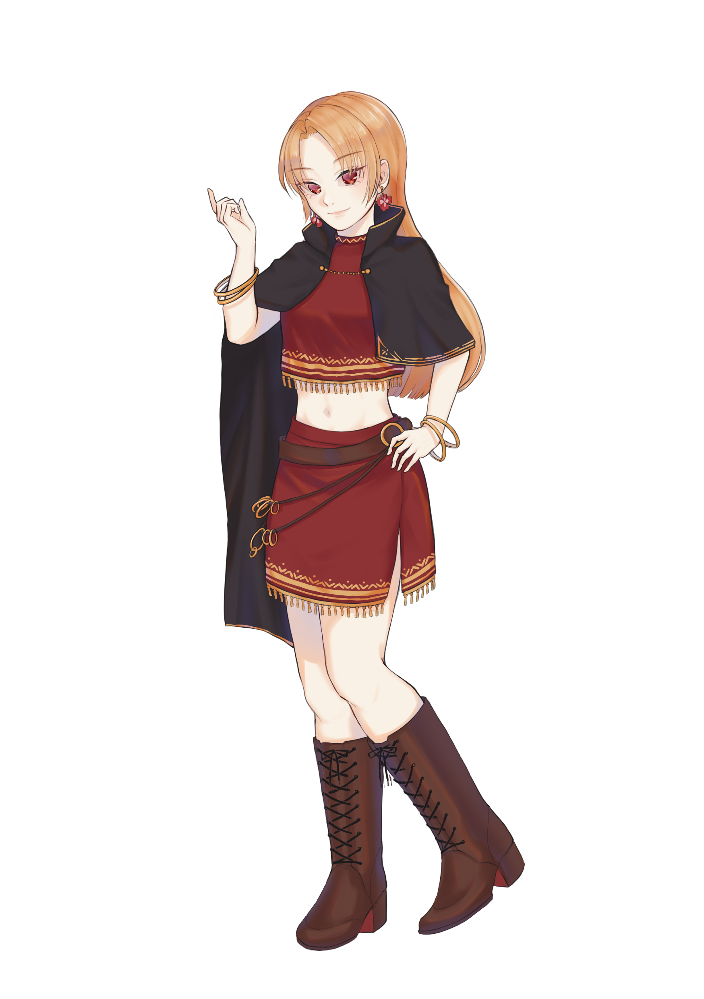

AireAの世界を旅するキャラクターたち

みおにゃん
ある日、突然AireAの世界に飛ばされた少女。 不思議な空間を通ったことで髪と眼の色が変化してしまった。謎多き世界を旅することとなる。
ある日、突然AireAの世界に飛ばされた少女。 不思議な空間を通ったことで髪と眼の色が変化してしまった。謎多き世界を旅することとなる。
みおにゃんを導いてくれる物腰柔らかな少女。 彼女は何を知っているのか。何が目的なのか。